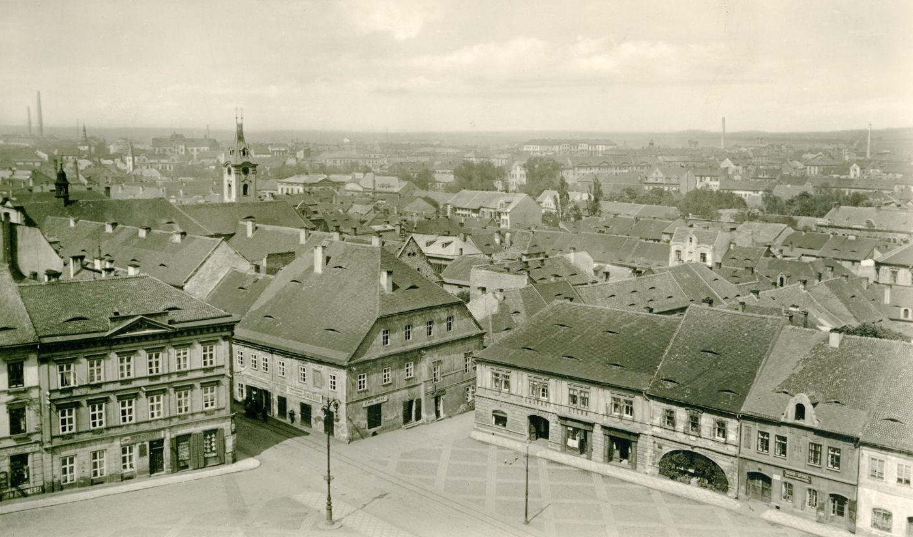
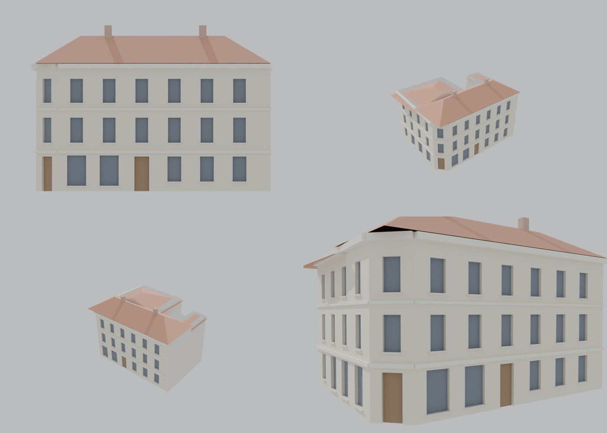

Identita domu
Nárožní dům Kulová × Minoritská se zkoseným nárožím a obchodem ZBRANĚ · STŘELIVO, výkladce do obou ulic. Pozor: karta ze schodů (kolem roku 1968) uvádí čp. 154 a 267 mezi „domky pod hradbami“ zbořenými okolo roku 1954 – viz Rozpory.
Použité prameny: fotografie řady 111–267 (cp_111,154,265,266,267_001), GIS půdorys (22,5 m do Minoritské, 17,6 m do Kulové).
Přílohy v databázi (6)
Všechny přílohy struktury 267 v databázi Libuše, načtené 18. 10. 2026 a otevřené. Kliknutím otevřete větší náhled.

fotografie
SHA-256 0ebdc835a90e…

pohlednice
SHA-256 b8adcb802c28…

pohlednice
SHA-256 211003d6e8aa…


pohlednice
SHA-256 e02031c1b4c4…

archivní karta
SHA-256 2bd813fa16fa…

odvozenina (kolorovaná / FRONT)
SHA-256 050253bb34ef…
Geometrie
| Revize geometrie | r4 |
|---|---|
| Poloha | GIS půdorys id 14 (ulice Minoritů) |
| Šířka průčelí | 22,47 m |
| Výška okapu | 12,20 m (odhad) |
| Podlaží | 3 |
| Střecha podle pramenů | valba (hypotéza) |
| Otvory / vikýře | 33 / 0 |
| Polygonů | 471 |
Kontrolní pohledy

Textury
zatím bez textur
Až Codex dodá texturovaný model, objeví se v prohlížeči nahoře volba Textury (Codex).
Hypotézy
Vše níže je model_hypothesis, provisional, locked: false.
- počet os a výšky odhad ze šikmé fotografie
- zkosení nároží 2,2 m (odhad)
- zadní křídla jen GIS obrys
Soubory
- Geometrie čp. 267, GLB
- Pracovní model: F:\MOST\output\kulova_5houses_claude_G_2026-10-16\houses\cp267\r4\cp_267_G_r4.blend
- Plán modelu: F:\MOST\output\kulova_5houses_claude_G_2026-10-16\houses\cp267\geometry_plan.json